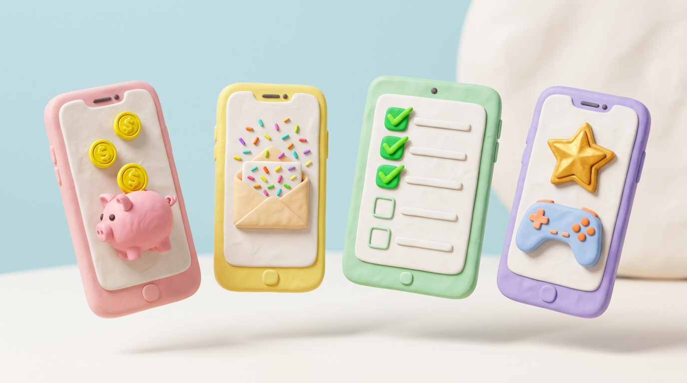

바이브코딩(Vibe Coding) 완전 정복
말로 앱과 웹사이트를 만드는 새로운 시대 🎈
💡 오늘 함께 볼 핵심 4가지
바이브코딩이란 무엇이고, 예전과 무엇이 다를까?
언제 시작되어 지금의 모습으로 발전했을까?
어떻게 시작하고, 어떤 도구를 쓰면 좋을까?
무엇을 만들 수 있고, 어떤 점을 주의해야 할까?
바이브코딩이란? (비유와 비교)
“복잡한 컴퓨터 글자를 배우지 않고, AI에게 일상적인 말로 설명해 결과물을 만드는 방식”
요리사 비유: 칼질부터 직접 배워 요리하는 대신, 실력 있는 요리사(AI)에게 말로 주문하고 맛을 보며 수정을 부탁하는 것과 같습니다.
| 구분 | 예전 방식 ✍️ | 바이브코딩 🚀 |
|---|---|---|
| 필요한 준비 | 컴퓨터 언어를 오래 배워야 함 | 만들고 싶은 아이디어와 일상적인 말 |
| 만드는 방법 | 사람이 한 줄씩 직접 입력함 | AI에게 말로 시키고 결과를 확인함 |
| 고치는 방법 | 틀린 글자를 사람이 직접 찾아 고침 | 이상한 점을 말로 알려 주면 AI가 고침 |
| 사람의 역할 | 직접 만드는 작업자 | 방향을 정하고 결과를 확인하는 총괄 감독관 |
탄생 배경과 결정적 순간 (2025년 2월 2일)
왜 2025년 초에 등장했을까?
- 🤖 AI 실력의 도약 짧은 질문에 답하던 수준을 넘어, 긴 설명을 알아듣고 여러 화면과 파일을 한꺼번에 만드는 수준으로 성장했습니다.
- 🎙️ 말하는 도구의 발전 목소리를 글자로 옮겨 주는 도구도 발전해, 키보드를 거의 치지 않고 입으로 말만 해도 완성되는 환경이 열렸습니다.
안드레이 카파시의 제안 (2025.02.02)
오픈AI 공동 창업자였던 연구자 안드레이 카파시가 소셜 미디어(X)에 처음 ‘바이브코딩’이라는 말을 썼습니다.
- 1말로 시키기: 키보드 대신 마이크로 말하며 설명
- 2바로 받아들이기: AI가 고쳐 준 내용을 무조건 ‘수락’
- 3그대로 붙여 넣기: 오류 문구만 복사해 AI에게 전달해 수정
폭발적 확산과 발전 3단계 (2025 ~ 2026)
이미 많은 사람이 쓰던 방식에 딱 맞는 이름이 붙자 순식간에 퍼졌고, 신생 창업 기업들도 AI로 서비스를 만들기 시작했습니다. 2025년 말에는 영국 콜린스 영어사전이 ‘바이브코딩’을 올해의 단어로 선정했습니다.
말로 뚝딱 만드는 유행
“일단 돌아가면 된다”는 가벼운 분위기로 빠르게 확산되었습니다.
대중화와 시행착오
누구나 앱을 만들었지만, 확인 없이 쓰다 개인정보 유출·수정 어려움 같은 안전 문제가 생겼습니다.
꼼꼼히 확인하는 성숙기
사람이 총괄 주방장처럼 기준을 정하고, AI의 결과를 꼼꼼히 검사하는 방식으로 정착했습니다.
어떻게 시작할까? (진행 순서 3단계)
작은 목표 정하기
처음에는 “할 일을 적는 간단한 메모장”처럼 작고 단순한 것부터 시작합니다.
말로 구체적으로 설명하기
“깔끔한 흰색 화면에 글 적는 칸과 ‘추가’ 버튼을 만들어 줘”처럼 편하게 부탁합니다.
직접 눌러 보고 다듬기
완성된 화면을 직접 써 본 뒤, 마음에 안 드는 부분을 말로 계속 고쳐 나갑니다.
목적에 따라 고르는 주요 도구
러버블(Lovable) · 볼트(Bolt.new) · 레플릿(Replit)
복잡한 설치 없이 웹사이트에 들어가 말만 걸면, 제작부터 인터넷 공개까지 한 번에 해결해 줍니다.
v0 (브이제로)
원하는 화면을 말로 적으면 보기 좋고 세련된 화면을 빠르게 그려 줍니다.
제미나이(Gemini) · 챗GPT(ChatGPT) · 클로드(Claude)
새 서비스에 가입하지 않고도 대화창 옆에 바로 눌러 볼 수 있는 작은 결과물을 띄워 줍니다.
커서(Cursor) · 윈드서프(Windsurf)
컴퓨터에 설치해 쓰는 도구로, 더 크고 복잡한 서비스를 세밀하게 관리할 때 좋습니다.
무엇을 만들 수 있을까? (잘 맞는 활용 예시)
나만의 편리한 도구
나만의 가계부, 오늘 할 일 목록, 점심 메뉴 고르기 룰렛
공유와 안내 화면
모바일 초대장, 여행 일정 공유 페이지, 온라인 명함
효율을 높이는 도우미
영어 단어 암기 퀴즈, 나만의 전용 계산기
즐기는 작은 콘텐츠
간단한 심리·성향 테스트, 숫자 맞히기 미니 게임

어디에 한계가 있을까? (주의해야 할 영역)
보안과 돈이 걸린 대형 서비스
은행 앱, 결제 시스템, 많은 사람의 개인정보를 다루는 서비스는 AI에게만 맡기면 매우 위험합니다.
크고 복잡한 장기 프로젝트
기능이 계속 늘어나고 여러 사람이 함께 관리해야 하는 큰 서비스는, AI가 만든 내용을 사람이 이해하지 못하면 나중에 고치기 어려워집니다.
시니어 AI 엔지니어의 실전 3원칙
한 번에 하나씩 시키세요 🎯
기본 뼈대를 먼저 만들고, 필요한 기능을 하나씩 덧붙이는 것이 훨씬 빠르고 정확합니다.
보이는 현상을 그대로 말해 주세요 🗣️
“‘추가’ 버튼을 눌렀는데 반응이 없어. 고쳐 줘.”처럼 눈앞의 상황만 알려 주면 AI가 원인을 찾아 고칩니다.
실제로 쓰기 전에 꼭 직접 확인하세요 🔍
AI도 가끔 엉뚱한 실수를 합니다. 남에게 공개하기 전에 모든 버튼을 직접 눌러 보고 확인해야 합니다.
앞으로의 전망과 마무리 🌈
“만드는 기술을 몰라도 아이디어를 현실로 꺼낼 수 있는 시대”
기획력 💡
사람들이 진짜 필요로 하는 것이 무엇인지 떠올리는 힘
확인하는 눈 👁️
AI가 만든 결과를 꼼꼼히 따져 보고 다듬는 힘
감사합니다! 🎉
직접 만들어 보고 싶은 작은 아이디어가 있다면 오늘 바로 가볍게 시작해 보세요.